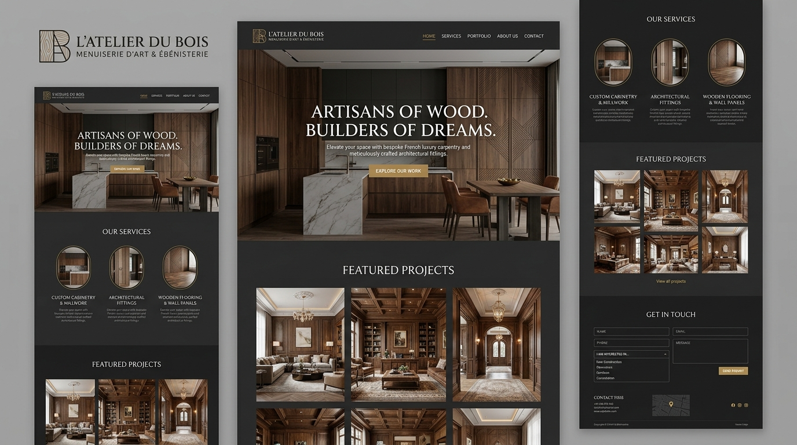

Mes Projets (PPE)
Retrouvez l'ensemble de mes Projets Personnalisés Encadrés (PPE) et réalisations techniques développés au cours de ma formation BTS SIO au Lycée Lamartine.

Gestion de Cinéma (Pathé Mâcon)
Développement complet d'une application lourde en C# WinForms pour le back-office et d'un site web dynamique en PHP/MySQL pour la consultation des films et des séances.

Infrastructure Réseau & Sécurité
Modélisation et mise en place d'une architecture réseau d'entreprise complète avec segmentation VLAN, plan d'adressage IP robuste et routage Router-on-a-stick sous Cisco Packet Tracer.

PPE 3/4 : Projet de Synthèse (Brit Hotel)
Projet de synthèse final validant l'ensemble des compétences de deuxième année : plateforme hôtelière complète combinant un logiciel client C# Entity Framework et une application web Laravel.

Hannachi Agencement (Site Officiel)
Site web professionnel conçu et déployé lors de mon stage de 1ère année : catalogue de cuisines sur mesure, demande de devis en ligne sous 48h, modélisation 3D et conformité RGPD.
TP1-Laravel (Architecture & ORM)
Atelier pratique approfondi sur Laravel : migrations de base de données relationnelle, modèles Eloquent, routes RESTful, contrôleurs et moteurs de templates Blade.
Monprojet (Design & Intégration)
Travaux d'intégration web responsive, maîtrise de Flexbox, CSS Grid, animations fluides et bonnes pratiques d'ergonomie utilisateur.